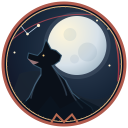

Small tools for dark worlds
World of Darkness Tools
A collection of little atmospheric companions for stories and games. No character manager or account required.
- Changeling: The Dreaming · First editionThe Cantrip DeckBrowse 168 cards, build a hand, and weave a cantrip with your own Art, Realm and Bunk cards.
- Mage: The AscensionMage Tarot ReaderDeal a spread with The Mage: the Ascension Tarot and read what each card means.
- Follow the Garou lunar year, step sideways into the Umbral sky, and consult the Celestines.

Werewolf: The ApocalypseRage Across the Heavens - Mage: The AscensionNames of the AwakenedTrace a Virtual Adept handle's Essence or compose Hermetic names with ten secret syllables.